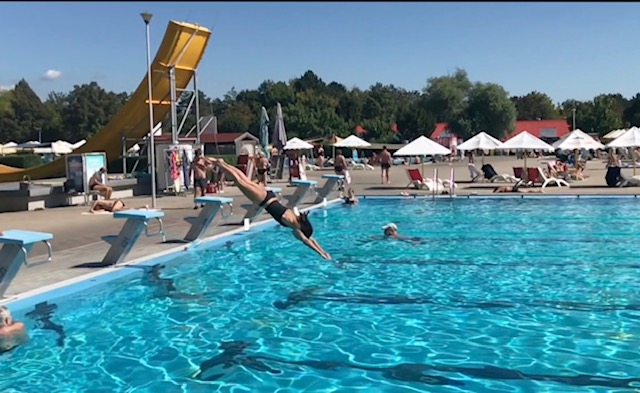
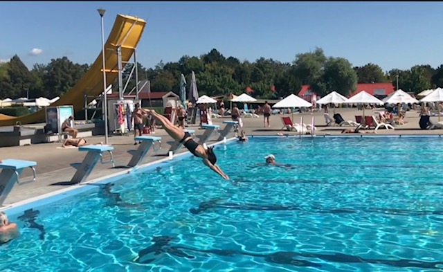
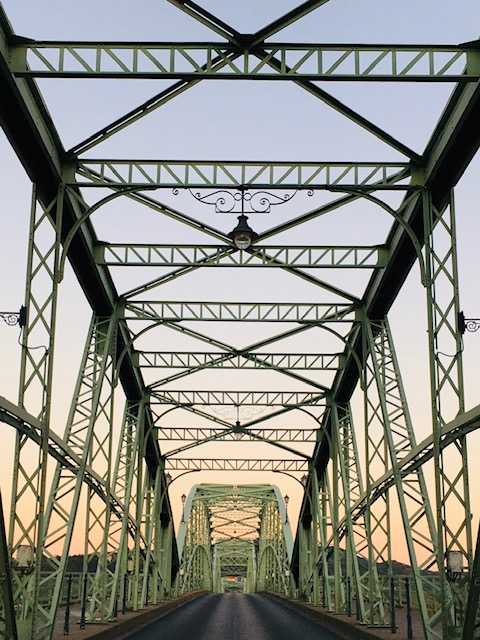
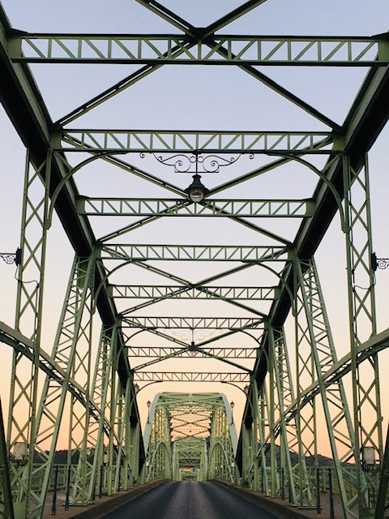

Je po létě. Před týdnem jsme se vrátili z termálních lázní Vadaš – Štúrovo. A to je opravdu horký tip, jak pro spastika jako je Jakub, tak welnessáka, jako jsem já. Vzácně se tu spojuje Jakubova i moje relaxace v přítomném okamžiku, kdy nebe je modré, voda horká a pivo studené.
Co je na tom tak bezvadného ?
Pomalu, ale jistě nabíjíme svoje vybité baterky líným povalováním se v perličkovém lůžku, kde se tak fantasticky a jakoby mimochodem opaluje celé tělo. Je to blahodárné. Kubovo spasmy tu tají jako čokoláda na slunci a on úlevou usíná přímo v bazénu. Znáte Watsu ? Je to vodní Shiatsu. …a ano, přesně to tam děláme. Nestojí mě to zdaleka tolik sil jako na suchu. Díky té spoustě času a vody, která nás nadnáší už jsme spolu vymysleli spoustu tanečních kreací zaklesnuti do sebe v objetí a jeho kruhu. Jakub tu zkouší znovu stát, nebo kopat nohama, splývat ..a mozek dostává obrovskou porci polohových podnětů. Já tu ráno chodím běhat, cvičit a zaplavu si, ještě než bazény otevřou v deset pro veřejnost. Je tu jedna padesátka plná minerálky, kde vodu mění nejpozději co dva dny. A jsou tu další tři bazény na povalování. V sezoně jich je tedy mnohem víc, včetně atrakcí pro děti. Ale to je vlastně důvod, proč sem v sezoně nejezdíme. Z Vadaše se stává klasické přeplněně ukřičené koupaliště, a po tom netoužíme. Květen a září je pro nás a pro důchodce jako stvořené. Ale na své si tu přijdou i sportovci, co se týče tréninku i regenarace. Za ta léta jsme tu viděli celé týmy plavců, kteří sem jezdí na soustředění i z České republiky. Je tu posilovna, je tu půjčovna kol a co je přidaná hodnota oproti jiným termálům?
Shodou historických okolností sahajících zřejmě do doby komunismu je zde hodně soukromých poskytovatelů ubytování přímo v areálu, což tvoří zvláštní mozaiku všemožné lidové architektury, ale také příjemné konkurenční prostředí. Vy si pak můžete vybrat mezi něčím skromnějším a dál od bazénů Ubytování Poláček, až po hotel Thermal , který jediný je otevřený celoročně. Hotel provozuje také sezónní apartmány Smaragd , naše nejoblibenější ubytování. A kemp, který je na strategicky skvělém místě, velice blízko bazénům i stánkům.
Bezbarierovost místa
Co se ubytování týče, kompletně a podle norem bezbarierové jsou dva apartmány ve Smaragdu, (dvě třílůžková studia) i v apartmánech Westend (čtyři čtyřlůžková s jednou ložnicí) a v hotelu jeden třílůžkový pokoj. Smaragdy jsou ale mnohem blíže k vodě. (cca 50 m) Apartmány Westend jsou naopak z ruky a do kopce (cca půl kilometru). Areál je opravdu rozlehlý a přináleží k němu i hezký rybník s tlustými kapry, vodním lyžováním, šlapadly a ostrůvkem, kde je nové lanové centrum a restaurace. Občerstvení a restaurací je tu spousta. K bazénům se na vozíku dostanete v klidu. I na elektrickém. Do bazénu ale žádné výtahy nejsou. Musíte si pomoci sami. Plavčíci také pomohou, dokonce půjčují speciální dřevěná lehátka označená invalidním znakem. Pomůžou Vám i ostatní koupajíci se, a opravdu se mi nestalo, že by se to nestalo. Na vozíčkáře jsou tu zvyklí i díky české organizaci Klubíčko Beroun, která sem pravidelně jezdí s rodinami s dětmi s hendikepem. I my tak začínali. Vřelé a srdečné díky za to!
A potom ta bazilika.
Je jako měsíc. Vidíte jí odevšad. Stojí tam, září večerním teplým světlem. Pod ní Dunaj, mohutná tyrkysová řeka s pískovými plážemi především na maďarské straně a ten nádherný most stejné barvy, který je spojuje. Maďarsko vůbec je tu hluboce infiltrováno a maďarsky se mluví i na slovenské straně naprosto přirozeně. Když Vás už minerálka nebavi, jeďte tam ! Estergom ! A za rohem je Budapešť! Na zájezd autobusem se můžete přihlásit přímo na koupališti. Stejně jako na lodní výlet po dunajském ohbí (více o této lokalitě zde) Ano ohbí. Plánujeme ho sjet příští rok na paddelboardu, jak jsme se letos inspirovali u náhodných kolemplovoucich a také zajet do maďarských hor a rokle “Rám” u vesnice Dömös. I po deseti letech jsem tady do toho ohbí zamilovaná.
Protože láska prochází žaludkem a sladká mletá paprika z maďároš, jahody a melouny z trhu, vinná réva, domácí brynza, halušky, klobásky a černý šariš…
Navíc se tu,maďároš nemaďároš, skvěle domluvíte slovensky. 😊
 

 
